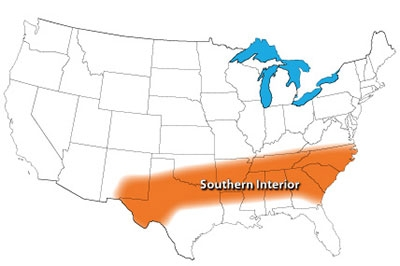

Top Crops: Southern Interior
Sweet peppers delight folks in the Southern Interior.
By Barbara Pleasant
April/May 2009
Broccoli finally makes it onto a Top 10 list thanks to the South’s long falls that start in September and linger until December. In addition, educational programs that encouraged farmers to switch from tobacco to broccoli probably trickled down to gardeners. Seedlings must be set out during the torrid days of August, and you will need to use row covers. Weekly sprays with a Bt or Spinosad insecticide will control cabbageworms and other leaf-eating caterpillars, but with row covers you get additional protection from grasshoppers - the scourge of the late-summer garden.
Most of the crops Southerners claim as their own - okra, sweet potatoes, Southern peas and watermelon - lined up just behind the region’s Top 10. One gardener commented that he took the survey just so he could say how happy he was with his okra. Yet it does look like the red clay soils of the South are tough for root crops, which even experienced gardeners often find difficult to grow. Framed raised beds filled with sandy loam may be the only solution.
On the other hand, fall greens pretty much grow themselves, and most Southerners value collards the most. Spinach, turnips, chard and mustard may be good, but in the South, collards are king.
Top 10
- Sweet pepper
- Slicing tomato
- Bush snap bean
- Summer squash
- Broccoli
- Garlic
- Bulb onion
- Pole snap bean
- Cherry tomato
- Hot pepper
Other Highly Rated Crops
Cabbage family: Cabbage, collards, kale
Cucumber family: Cantaloupe, watermelon, winter squash
Leafy greens: Arugula, chard, lettuce, mâche, mustard (all types), pac choi, sorrel, spinach, turnip greens
Legumes: Asparagus/yard-long bean, bush lima bean, dry soup bean, edamame, pole bean, snow/snap pea
Root crops: Potato, radish, rutabaga, shallot, sunchoke, sweet potato
Tomato family: Eggplant, tomatillo
Miscellaneous: Asparagus, okra, scallion, sweet corn
Read The Best Crops for Your Garden to find top crops for other U.S. gardening regions.
|
 NATE SKOW The Southern Interior gardening region. |
 EMILY HELLER Sweet peppers were rated as the No. 1 food garden crop by gardeners in the Southern Interior. |
|